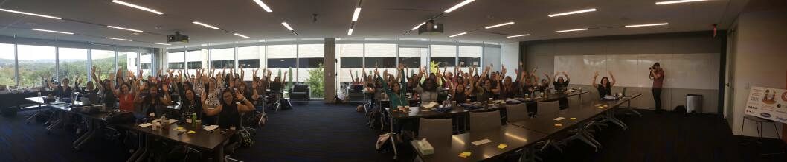

What is GDI?
Girl Develop It is a 501(c)3 nonprofit that provides affordable and accessible opportunities to women who want to learn web and software development through hands-on instruction.

Since our founding in 2010, Girl Develop It has led the nationwide movement to provide women with avenues to participate in the technology industry today.
On October 6th-9th in Austin, TX, the annual Girl Develop It Leadership Summit will brought together 75 industry-leading technical women from our 50+ chapters across the country, representing more than 68,000 Girl Develop It members nationwide. 
Vanessa Hurst
Our founder

'Girl Develop It' is first a women's empowerment organization
Valerie Aurora
The Path to Sustainable Activism
- Diversity and Inclusion Independent Consultant
- The Ada Initiative
- "What Works For Women at Work"
Preventing Burnout
"No amount of self care will make up for a job you hate" -Valerie Aurora
Some questions to ask:
-
What is your ideal day?
-
What is your ideal job?
-
What is your value?
Developing and manintaing a strong leadership team
- Finding complementry members that have the same values
- Knowing the benefits and recognition
- Building the pipeline to more leaders
- Trust and Communication
- Empowering new leadership
Chapter Goal Setting
- Growing our leadership team
- Doubling our membership (currently at 542)
- Prevent our own burnout
- Continue to provide a safe environment
Unconscious Bias
Fostering Belonging
Your brain's short cuts based on learned behaviors (that are essentially wrong).
- Starts with resumes and interviews
- Speaking and Interuptions
- Performance Reviews
Books
- Thinking Fast and Slow by Daniel Kahneman
- Mindset by Carol Dweck
- Overwhelmed by Brigid Schulte
- Crucial Conversations by Kerry Patterson et al.